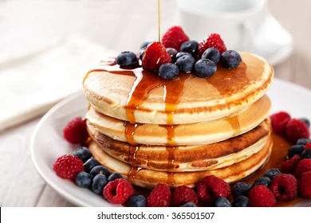

Pancakes

Description
Makes about 10 pancakes.
Ingredients
- 1½ cups all-purpose flour
- 1¼ cups milk
- 1 egg
- 3 tablespoons butter, melted
- 1 tablespoon white sugar
- 2 teaspoons baking powder
- 1 teaspoon salt
Steps
- Mix flour, milk, egg, butter, sugar, baking powder, and salt together.
- Heat a lightly oiled griddle over low heat.
Scoop 1/4 cup batter onto the griddle and cook until top and edges are dry, 3 to 4 minutes.
Flip and cook until lightly browned on the other side, 2 to 3 minutes.
Repeat with remaining batter.